Web technologies · Assignment 3
Responsive design,
with a human point of view.
A ten-task study of CSS media queries and Bootstrap 5.3, presented as a cohesive, responsive dealership website.
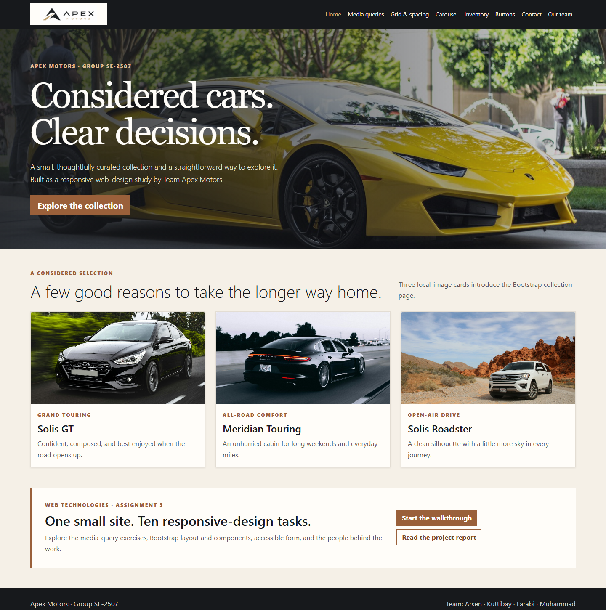
Team: Apex Motors
Group: SE-2507
Course: Web Technologies / Front-End Development
Members: Kuttibay, Farabi, Arsen, Muhammad
Project: isolated copy in assignment3-bootstrap/
Build: Bootstrap 5.3.3 + project-specific CSS

Kuttibay

Farabi

Arsen

Muhammad
01 · Responsive foundations
Objective
Build a self-contained, accessible dealership website that demonstrates all ten assignment requirements, uses CSS media queries for responsive behavior, and applies Bootstrap components and spacing utilities consistently without changing the existing Assignment 1/2 site.
CSS media queries, used with intention
The site keeps the original Assignment 1/2 website outside this folder. Assignment 3 has its own stylesheet, Bootstrap 5.3.3 links, local vehicle photographs, shared navbar, and linked learning pages.
Task 1 · Responsive typography
- Write actual dealership headings and paragraphs in
typography-cards.html.
- Set smaller type at phone widths, then increase the same heading and paragraph at the 576px tablet and 992px desktop breakpoints.
- Resize or inspect the page at all three widths and compare the text scale and line wrapping.
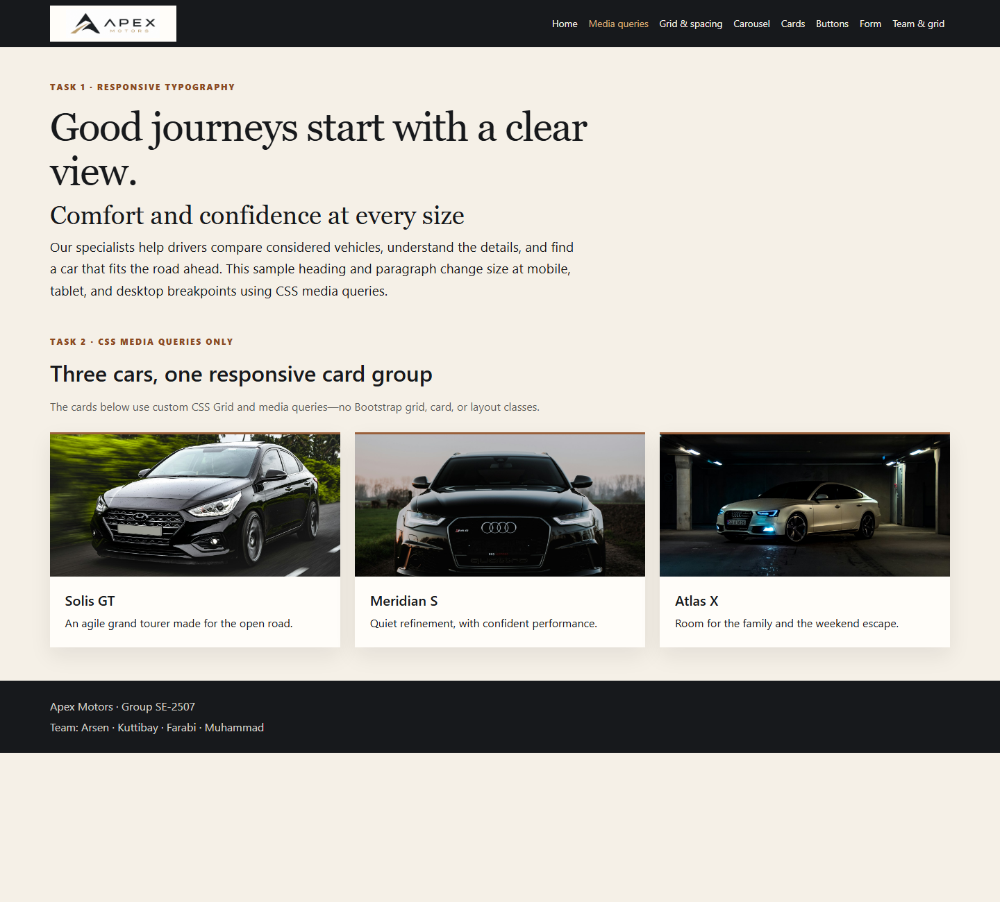
Desktop · real heading and paragraph with three cards
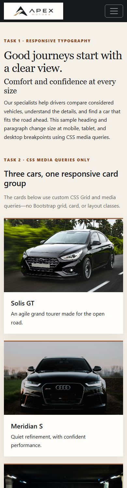
Mobile · reduced type scale and stacked cards
Task 2 · CSS-only three-card row
- Build three vehicle articles with semantic HTML and a dedicated
.media-demo CSS grid.
- Use three columns on desktop, two at tablet widths, and one on mobile using CSS media queries only.
- Keep Bootstrap grid and card classes off this card group so its responsive behavior comes only from project CSS.
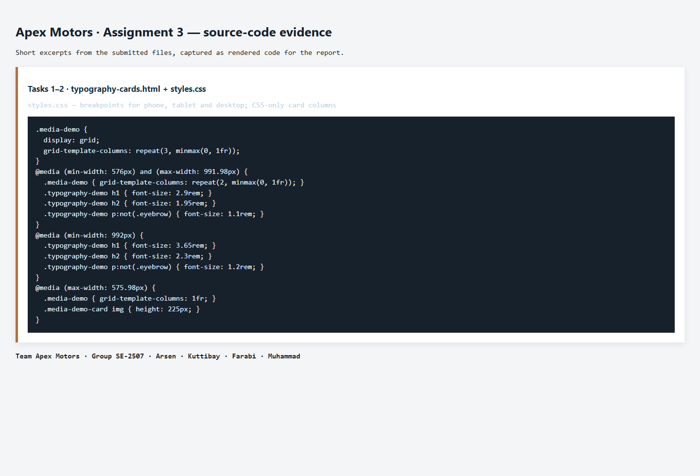
Source evidence · the card layout and responsive typography breakpoints are in styles.css.
02 · Bootstrap layout system
Tasks 3–4 · Grid and responsive spacing
Task 3 · Bootstrap grid
- Wrap both examples in Bootstrap containers and rows with consistent gutters.
- Use two
col-lg-6 columns for the feature pair; they stack on phones and split at tablet widths.
- Use three
col-lg-4 columns for the next set; col-sm-6 shows two columns at small screens.
- Resize the page to see the columns reflow without horizontal scrolling.
Task 4 · Bootstrap spacing utilities
- Replace intended layout spacing with Bootstrap utilities instead of custom margin/padding rules.
- Use breakpoint-specific examples such as
px-sm-2, mt-lg-4, py-4, and responsive gutters.
- Check that spacing remains legible as the grid changes at phone, tablet, and desktop widths.
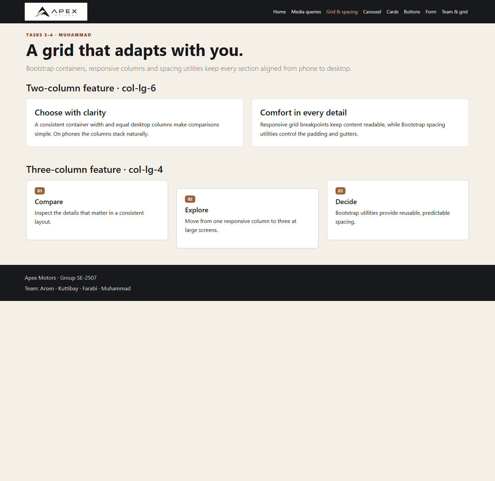
Grid and spacing utilities · visible content comes from grid-spacing.html.
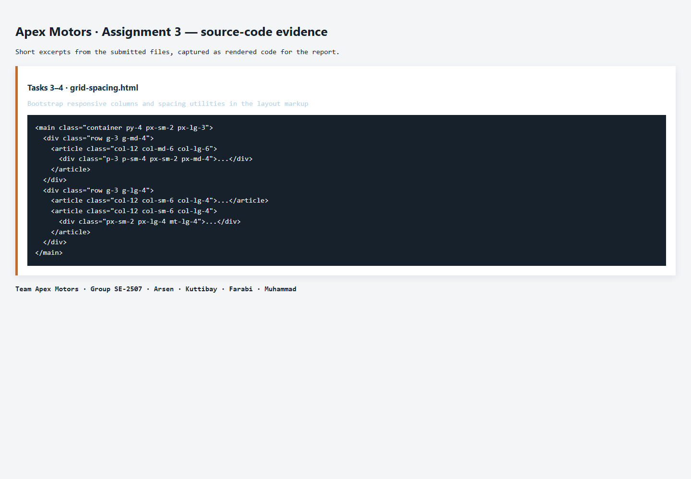
Source evidence · col-lg-6, col-lg-4, px-sm-2, and mt-lg-4.
03 · Navigation and actions
Tasks 5–6 · Bootstrap components
Task 5 · Collapsible navbar
- Load the Bootstrap 5.3.3 CSS and JavaScript bundle on the site pages.
- Place the supplied local Apex Motors logo in a
navbar-expand-lg navigation with eight meaningful page links.
- Connect the accessible toggler to the collapsible menu with matching
data-bs-target and id, and keep aria-expanded in sync.
- Test links at desktop width and the collapsed menu on a narrow viewport.
Task 6 · Bootstrap buttons
- Replace default actions with Bootstrap
btn-primary, btn-secondary, and outline variants.
- Show
btn-lg and btn-sm alongside standard actions.
- Group related navigation actions in an accessible
btn-group.
Shared navbar · supplied logo and collapsible page links
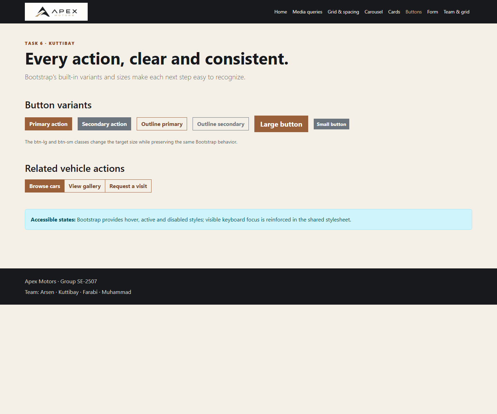
Button page · variants, sizes, and grouped actions
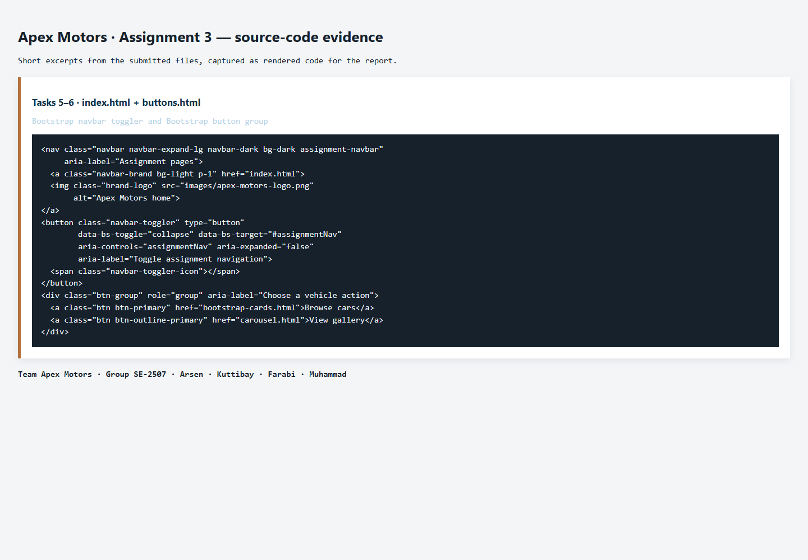
Source evidence · the toggler is wired to the page's Bootstrap collapse target.
04 · Collection and components
Tasks 7–8 · Carousel and cards
Task 7 · Bootstrap carousel
- Keep nine distinct vehicle photographs in the local
images/ folder.
- Create nine individually named slides with meaningful alternative text and a matching caption.
- Pair each slide with its indicator and add previous/next controls with descriptive accessible names.
- Leave slide changes user-controlled; the carousel supports the Bootstrap keyboard interaction.
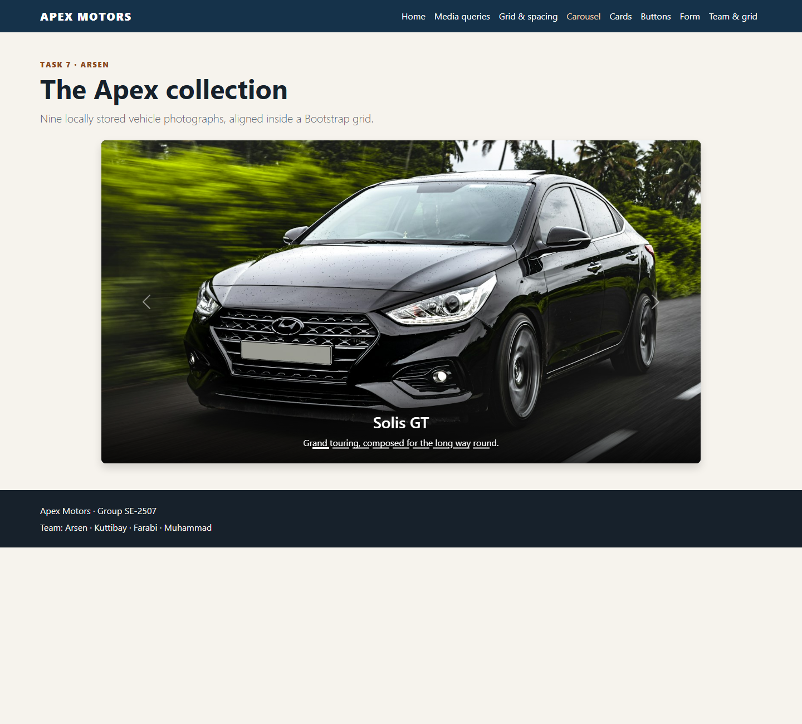
Nine photographs are stored locally; no external image host is needed.
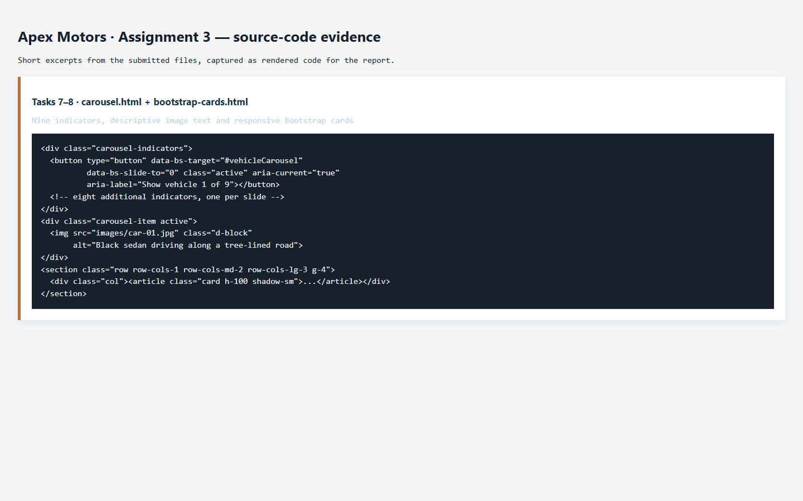
Source evidence · indicators and corresponding local image slides.
05 · Inventory cards
Task 8 · A responsive Bootstrap card grid
- Use Bootstrap's responsive row/column utilities to arrange three inventory cards.
- Give each card a local car photograph with descriptive alternative text, a model title, a concise description, and a clear action.
- Stack cards on phones, use two columns at medium widths, and show three at large widths.
- Align card actions to keep the row consistent even when descriptions wrap differently.
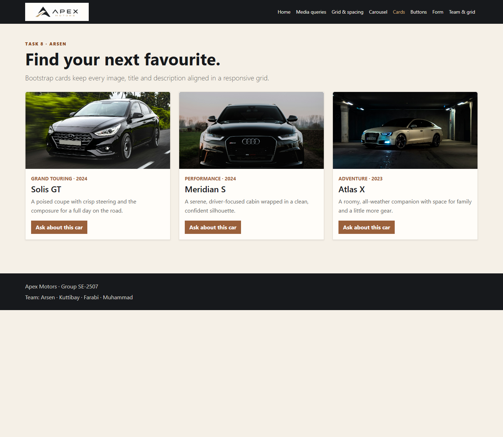
Design note: restrained colors, square card edges, real dealership language, and a consistent editorial rhythm connect this learning page to the wider Apex Motors site.
Cross-page navigation
The cards link to the inquiry form, the carousel links each slide to its own local image, and all pages share the same navbar and team footer.
06 · Accessible inquiry
Task 9 · Responsive Bootstrap form
- Lay out the form with responsive Bootstrap columns, including
col-md-6 field pairs.
- Associate a visible label with every control; use
form-control, form-select, and a budget input-group.
- Include an accessible radio fieldset, a labeled checkbox, and optional free-text details.
- Validate the required name and email fields; send invalid focus to the first invalid control and announce a result through a live status region.
- State clearly that this classroom demo does not transmit or store personal information.
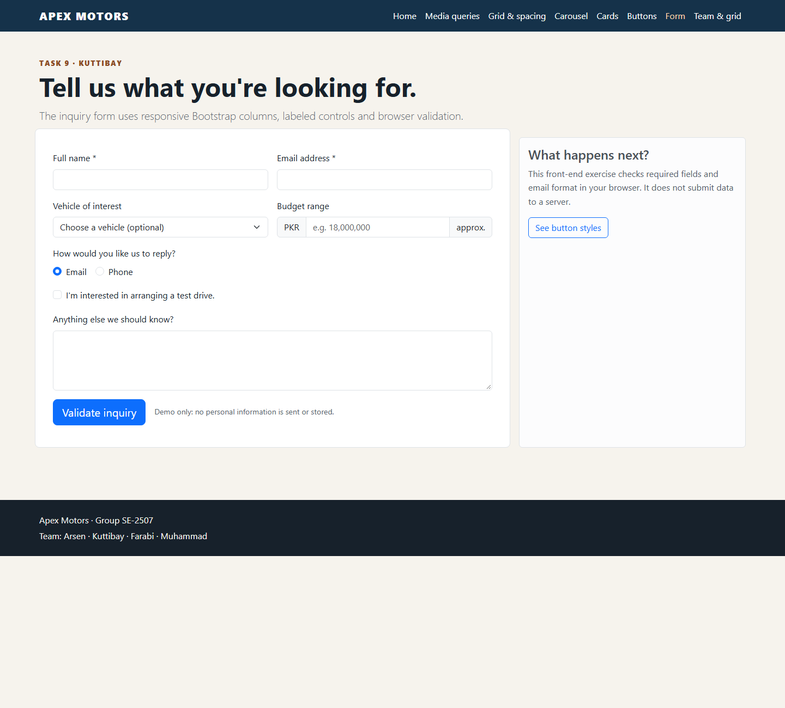
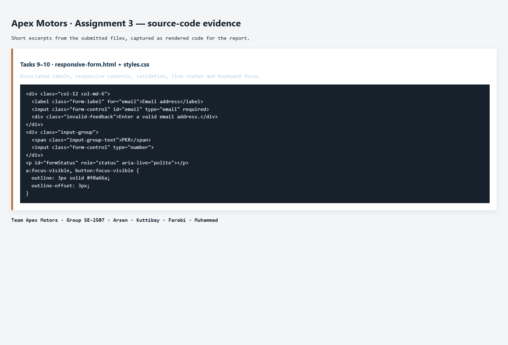
The form's success state is only a local validity demonstration; there is no submission endpoint.
07 · Inclusive details and delivery
Task 10 · Semantic HTML and accessibility
- Use a page title, landmark elements, ordered heading levels, and a keyboard-accessible skip link.
- Provide visible focus, descriptive alternative text, adequate contrast, and meaningful link/button labels.
- Associate labels with form controls and use a live status region for validation feedback.
- Keep the carousel user-controlled and honor reduced-motion preferences in project styles.
- Keep the interface responsive without hiding meaningful text or requiring hover interaction.
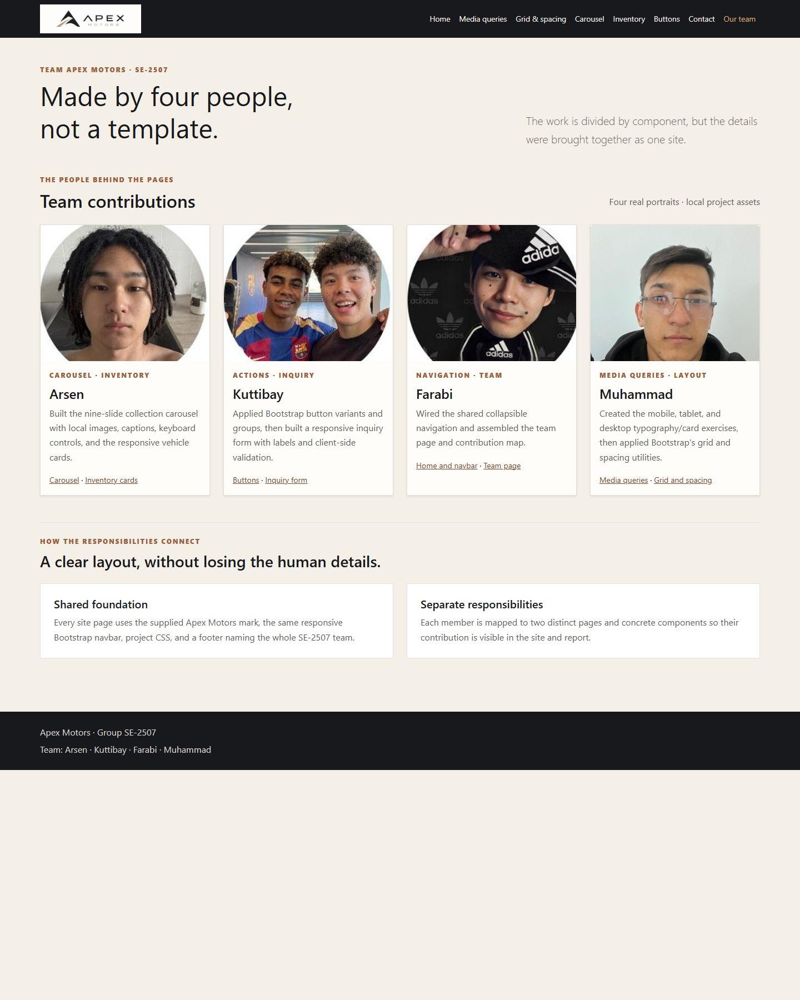
The contribution page uses the team's four supplied portraits.
Mobile evidence · layout reflows to a single card column.
Team responsibility map
| Member | Two pages and component contribution |
|---|
| Arsen | carousel.html · nine-slide carousel; bootstrap-cards.html · responsive inventory cards |
| Kuttibay | buttons.html · button variants/group; responsive-form.html · labeled validated form |
| Farabi | index.html · collapsible navigation; team-grid.html · team contribution page |
| Muhammad | typography-cards.html · media-query layouts; grid-spacing.html · Bootstrap grid/utilities |
Live website
https://vertex-blip.github.io/Car-dealership-website/assignment3-bootstrap/
The ZIP contains only this self-contained Assignment 3 project, its local images, report, and evidence. Bootstrap itself is loaded from the official jsDelivr CDN. The existing root-level A1/A2 site is not part of the archive.
08 · Reflection
Final reflection
Building the site as one connected experience helped us see how responsive design depends on more than changing column counts. Bootstrap's grid and spacing utilities made the shared layouts consistent, while CSS media queries gave the typography and three-card exercise precise control at each breakpoint. Keeping navigation, accessible labels, local imagery, and the team contributions consistent across separate pages made the result easier to use and understand. We would carry that balance of reusable components, careful responsive testing, and clear ownership into our next project.